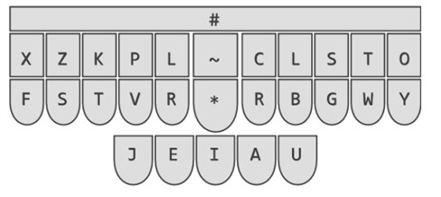

Celem pojektu Steno_PL jest publikacja słowników zgodnych z Plover i z wtyczką Slowik, przeznaczonych dla systemu polskiej stenotypii.
Czym jest stenotypia (i szerzej: stenografia) możemy dowiedzieć się z serii wpisów na blogu Krzysztofa Smirnowa: www.stenografia.pl, który jest nieocenionym apostołem, propagatorem i źródłem wiedzy na ten temat w polskim internecie. Jest również autorem i koordynatorem prac nad wtyczką Slowik do oprogramowania Plover, ale o tym za chwilę.
Gdy już poznamy czym jest stenotypia to pora odpowiedzieć sobie na pytanie - co jest potrzebne do tego, żeby nauczyć się jej i móc ją praktykować. Niezbędnymi składnikami są:
Skąd to wszystko wziąć? No to po kolei...
Z klawiaturami stenotypicznymi jest ten problem, że kosztują majątek. Dodatkowo nie każda pasuje do każdego systemu. Lepszym rozwiązaniem (przynajmniej na początek przygody ze stenotypią) wydaje się przystosowanie sobie "normalnej" klawiatury mechanicznej. Niestety to musi być klawiatura mechaniczna (tak więc tanie klawiatury za kilkadziesiąt PLN odpadają) ponieważ musi rejestrować wiele naciśniętych klawiszy jednocześnie (tzw. NKRO - N-Key Rollover). Do takiej klawiatury powinniśmy wydrukować sobie specjalne nakładki "prostujące" układ klawiatury i zbliżające klawisze do siebie. Na sieci można znaleźć gotowe pliki .stl z takim nakładkami, które możemy pobrać i wydrukować na drukarce 3d. Przykładowe model poniżej:
Do niedawna nie mieliśmy polskiego systemu stenotypii ale na szczęście to się zmieniło. Priscilla Trillo wykonała niesamowity ogrom pracy i przygotowała podręcznik z opisem systemu nie tylko dla języka polskiego ale również dla czeskiego i słowackiego! Opis systemu "West Slavic Machine Stenography" jest do pobrania TUTAJ całkowicie za darmo. Teraz nie ma już żadnego usprawiedliwienia. Wystarczy "tylko" usiąść do lektury opasłego tomiska i się uczyć.
Oprogramowanie obsługujące klawiatury stenotypiczne to dobrze znany w środowisku steno Plover. Oprogramowanie to jest udostępnione za darmo i należy je ściągnąć i zainstalować na komputerze, na którym będziemy zgłębiać tajniki sztuki stenotypii. Strona domowa projektu Plover jest TUTAJ.
Jak można było przeczytać wcześniej - Krzysztof Smirnow nie tylko dzieli się z wszystkimi swą ogromną wiedzą na temat stenografii i stenotypii ale również stworzył (wspólnie z Markiem Łukasiewiczem) wtyczkę do oprogramowania Plover, obsługującą polski system stenotypii. Wtyczka nazywa się Slowik (z powodów podanych w tym wpisie na blogu stenografia.pl) i należy ją zainstalować zgodnie z instrukcją dostępną TUTAJ.
No i tu mamy pewien problem. Otóż słownika zgodnego z polskim systemem stenotypii... nie ma. Ten dostępny z wtyczką Slowik jest na razie dość pusty. Z wpisów na blogu stenografia.pl możemy dowiedzieć się, że prace nad słownikiem trwają ale nie został określony żaden horyzont czasowy, kiedy taki słownik mógłby się pojawić. Stąd właśnie pomysł na projekt Steno_PL. Żeby nie blokować sobie możliwości nauki polskie stenotypii zacząłem przygotowywać słownik, który docelowo ma zawierać wszystkie słowa wykorzystane w ćwiczeniach opisanych w podręczniku. Słownik uzupełniam sukcesywnie w trakcie przerabiania kolejnych lekcji z podręcznika, które również przepisuje tutaj do GitHuba. Po szczegóły - odsyłam TUTAJ.
Podziękowania dla wszystkich osób, dzięki którym możemy zgłębiać piękną sztukę stenotypii w naszym języku:
Powodzenia w nauce
Jamers